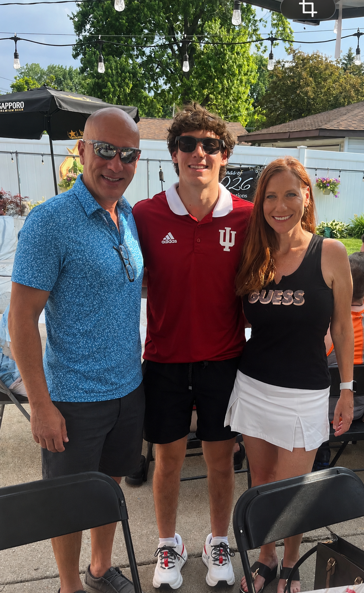

The Vault Antiques & Decor
A family-driven retail experience built on passion, trust, and a love for finding pieces that tell a story.

Our Story
Built by Family. Curated with Purpose.
The Vault Antiques & Decor is more than a store — it’s something we’re building together as a family.
Founded by Johnny Rivas, The Vault comes from years of hands-on experience sourcing unique, high-quality pieces and understanding what truly stands out in the resale market. What started as a passion for finding hidden gems has grown into a vision for something bigger — a place where people can walk in and immediately feel the difference.
Behind the scenes, it’s a family effort. Their son, Ricky, who is heading to Indiana University to study technology, is helping build the digital side of The Vault, from inventory tools to ideas for how the business can grow. Liz Rivas, with a background in technology, supports that work by helping guide the systems, organization, and long-term planning behind the scenes.
Together, The Vault is being built not just as a store, but as something that can grow, evolve, and last.
Curated, Not Cluttered
We don’t fill the store just to fill space. Every piece is chosen with intention.
Functional Beauty
We focus on pieces that are both beautiful and useful, from decor to furniture to lighting.
Always Changing
Inventory is refreshed often, giving customers a reason to come back and discover something new.
The Experience
Designed to Feel Different
We believe finding something special shouldn’t feel like work. The Vault is designed so you can walk in, take your time, and actually enjoy the process. No digging through clutter. No overwhelming rows of items. Just a space where every piece has a place — and a purpose.
Visit Us